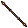

Apresentação do Monk
A nova classe espiritual do Tibia

Habilidades do Monge

Double Jab
Causa dano a um inimigo único.

Restore Balance
Cura um aliado jogador alvo.

Sweeping Takedown
Gaste toda a Harmonia para causar dano aos inimigos a frente e ao lado do monge, ataque em área que atinge até 14 Sqms.
Artefatos

Jo Staff
Arma usada após sair de Dawnport, pode ser considerada a primeira arma "de verdade". Causa dano de Energy

Simple Jo Staff
Alternativa ao Jo Staff, porém deve ser dropada dos inimigos Emerald Damselfly ou o Dawnfly. Causa dano de Earth.

Pair of Monk Fists
Podemos usar nossa primeira arma que causa dano Physical a partir do lvl 10. Ela pode ser comprada de qualquer NPC vendedor de armas das cidades
Contato
Este é um projeto sem fins lucrativos